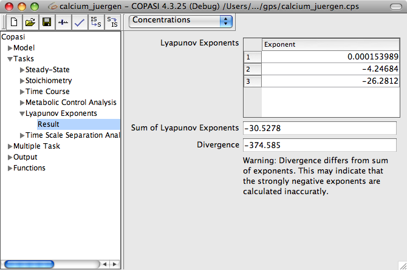

The widget to calculate Lyapunov exponents in COPASI is located in the Task branch of COPASI's tree view. If you select the Lyapunov Exponents item in the tree, the corresponding widget will be displayed. The first input field in the widget labeled Number of Exponents lets you specify how many Lyapunov exponents are to be calculated. This number should be between one and the number of independent variables in the system (that is the number of species that are not constant minus the number of mass conservation relations). If you specify a number that is higher than the number of independent variables in the system, COPASI will issue a warning telling you to lower the number and will also tell what the maximal number should be. During the calculation of the Lyapunov exponents, a time course simulation is carried out. If your model shows a long transient, you might want to exclude the beginning of the trajectory from the calculation of the Lyapunov exponents. For this, COPASI lets you specify at which time point the averaging for the Lyapunov exponents should start. You can specify this delay in the field labeled start averaging after t= ".
With the check box labeled calculate Divergence, you can activate the calculation of the average divergence. The divergence is calculated as the average over the trace of the Jacobian (see
Lyapunov calculation method).
The method behind of calculating Lyapunov exponents is called
Wolf Method. For a more detailed description of the method and its parameters please see the
Lyapunov exponents methods.
After clicking the Run button, COPASI will start the time course simulation in order to calculate the Lyapunov exponents. Once the calculation is finished, COPASI will jump to the Result window. The window shows the calculated Lyapunov exponents in a table and beneath the table it shows the sum of the calculated exponents. If you told COPASI to calculate the divergence as well, this will be shown underneath the Sum of Lyapunov Exponents display. If you told COPASI to calculate all Lyapunov exponents (as many as there are independent variables in the model), the sum of the exponents and the divergence should be equal; if it isn't COPASI will display a warning. Since the warning only makes sense if all exponents have been calculated, it will not be displayed otherwise. It is expected that the divergence and the sum differ in those cases.
|  |
| Results for the Lyapunov Exponent Calculation |